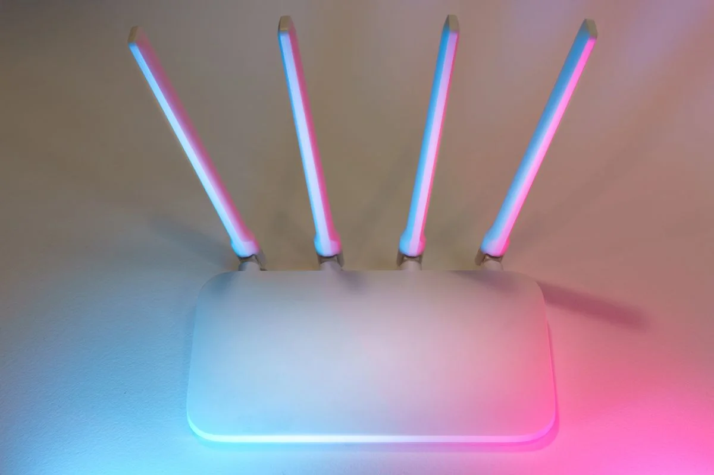
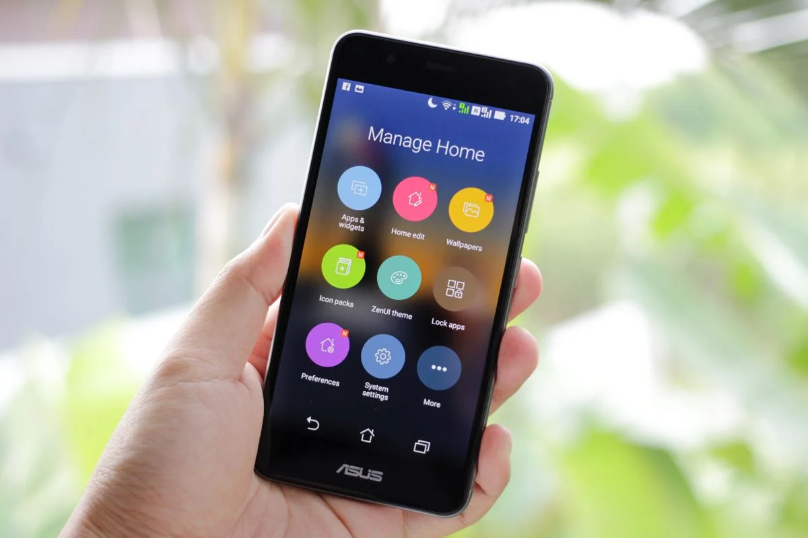

Este post contém links de afiliado. Podemos receber uma comissão em compras feitas através deles, sem custo adicional para você.
Comedouro automático com Wi-Fi vale a pena para quem viaja com frequência e quer monitorar ou reprogramar a alimentação pelo celular; sem Wi-Fi vale mais para rotina fixa e previsível, com menos pontos de falha e preço mais baixo. A escolha certa depende mais do seu estilo de vida do que de qual modelo é "melhor".
Key Takeaways
- Comedouro com Wi-Fi permite programar e monitorar pelo app, geralmente com notificações e às vezes câmera integrada.
- Comedouro sem Wi-Fi programa tudo no painel físico do aparelho — menos flexível remotamente, mas com menos pontos de falha.
- Problemas de conectividade Wi-Fi são apontados como uma queixa comum entre usuários de comedouros automáticos conectados (CBNB Supplier, retrieved 2026-08-21).
- Modelos sem Wi-Fi costumam custar menos que a versão equivalente com conectividade.
- A escolha certa depende da rotina: viagens frequentes favorecem o Wi-Fi, rotina fixa favorece o modelo sem conexão.
Para conhecer todos os tipos de comedouro automático disponíveis antes de decidir entre Wi-Fi ou não, veja nosso guia completo de comedouro automático para pet.
A diferença central não está na capacidade de liberar ração no horário certo — os dois tipos fazem isso igualmente bem. A diferença está em quem controla o horário e como. No comedouro sem Wi-Fi, a programação é feita direto nos botões do painel: você define horário e porção, e o aparelho executa isso de forma independente, sem depender de internet. É o caso do Newpet 4L, que avaliamos aqui e que funciona inteiramente pelo painel físico.
No comedouro com Wi-Fi, a programação passa pelo aplicativo do fabricante, que se comunica com o aparelho pela rede doméstica. Isso abre espaço para recursos extras — ajustar horários remotamente, receber notificações quando o pet come, em alguns casos acompanhar por câmera — mas também adiciona uma camada extra de dependência: se a rede cair ou o app apresentar bug, parte dessa conveniência desaparece temporariamente. É o caso do VDRBG 4L Wi-Fi, que também já avaliamos neste site.
O maior ganho é o controle remoto: reprogramar horários, ajustar porções e, em alguns modelos, acompanhar a alimentação por câmera direto do celular, esteja você em casa ou não. Para quem viaja com frequência ou tem rotina imprevisível, isso resolve um problema real que o modelo sem Wi-Fi simplesmente não cobre.
Modelos com Wi-Fi também costumam trazer notificações — um alerta quando o reservatório está baixo, por exemplo, ou uma confirmação de que a refeição foi liberada. São recursos de conveniência que fazem diferença principalmente para quem está fora de casa por períodos mais longos.

Problemas de conectividade são apontados como uma queixa comum entre usuários de comedouros automáticos conectados (CBNB Supplier, retrieved 2026-08-21), um padrão também observado em reviews de modelos como o VDRBG 4L Wi-Fi. Rede doméstica instável, mudança de senha de Wi-Fi, ou até uma atualização de firmware mal-sucedida podem deixar o aparelho temporariamente sem sincronizar com o app — o que gera frustração, mesmo quando a alimentação básica programada continua funcionando localmente no aparelho.
Também há o custo: o módulo de conectividade adiciona um valor ao preço final que, para quem não vai de fato usar o controle remoto no dia a dia, acaba sendo um gasto sem retorno prático.
Simplicidade e menos pontos de falha. Sem depender de rede, servidor do fabricante ou versão do app, o comedouro sem Wi-Fi tende a ser mais previsível: você programa uma vez no painel e ele executa a mesma rotina até você mudar manualmente. Para uma rotina de trabalho fixa — sair de manhã, voltar à noite — essa previsibilidade cobre a necessidade real sem complicação extra.
O preço também costuma ser mais baixo, já que não há custo de hardware de conectividade nem de manutenção do backend do aplicativo embutido no produto.
A limitação óbvia é a falta de controle remoto: se você precisar mudar um horário estando fora de casa, ou quiser confirmar visualmente que o pet comeu, o modelo sem Wi-Fi não oferece esse recurso. Para viagens mais longas, isso significa depender de alguém presencialmente para qualquer ajuste na programação.
Configurar um comedouro sem Wi-Fi costuma ser mais rápido: basta seguir o manual do painel físico, definir horário e porção, e o aparelho já está funcionando. Já a configuração de um comedouro com Wi-Fi envolve emparelhar o aparelho ao aplicativo, conectar à rede doméstica e, em alguns casos, criar uma conta no serviço do fabricante — um processo com mais etapas e mais chance de esbarrar em algum problema técnico ao longo do caminho, sendo a incompatibilidade com redes de 5 GHz a causa mais comum de falha na configuração (Cabine Celular, retrieved 2026-08-21). Se você optar por um modelo com Wi-Fi, vale conferir nosso guia de como configurar o app do comedouro Wi-Fi antes de começar, para evitar os erros mais comuns nesse processo.

| Critério | Sem Wi-Fi | Com Wi-Fi |
|---|---|---|
| Programação | Painel físico do aparelho | Aplicativo do fabricante |
| Controle remoto | Não | Sim |
| Pontos de falha | Menos (energia/pilha) | Mais (rede, app, servidor) |
| Preço | Geralmente mais baixo | Geralmente mais alto |
| Melhor para | Rotina fixa e previsível | Rotina imprevisível, viagens frequentes |
| Exemplo avaliado | Newpet 4L | VDRBG 4L Wi-Fi |
Se a sua rotina é previsível — mesmos horários de saída e retorno, sem viagens frequentes — um comedouro sem Wi-Fi como o Newpet 4L entrega o mesmo resultado prático de um modelo conectado, com menos pontos de falha e por um preço menor. Já se você viaja com frequência, tem uma rotina imprevisível ou simplesmente valoriza a tranquilidade de acompanhar a alimentação do pet remotamente, o investimento extra em um comedouro com Wi-Fi, como o VDRBG 4L Wi-Fi, tende a compensar.
Vale lembrar também que orçamento influencia essa decisão: para quem está começando com um único pet pequeno e quer testar o conceito de comedouro automático sem gastar muito, um modelo de entrada sem Wi-Fi — como o Newpet 2L — costuma ser o ponto de partida mais equilibrado antes de considerar recursos extras de conectividade.
Não existe um vencedor universal entre comedouro com ou sem Wi-Fi — existe o modelo certo para a sua rotina. Rotina fixa e orçamento mais enxuto favorecem o modelo sem Wi-Fi; rotina imprevisível e vontade de monitorar remotamente favorecem o modelo conectado. Em ambos os casos, vale entender exatamente o que cada recurso resolve antes de pagar a mais por conectividade que você talvez nunca use no dia a dia.
Para conhecer todas as opções e comparar outros modelos antes de decidir, veja nosso guia completo de comedouro automático para pet.
Escrito por Nildo Alves. Veja nossa política editorial e como verificamos as fontes citadas neste artigo.
🐾 Confira o preço e a disponibilidade atual no Mercado Livre.
Ver no Mercado Livre →Link de afiliado: podemos receber uma comissão por compras feitas através deste link, sem custo adicional para você.
Em geral, sim, no sentido de ter menos pontos de falha. Um comedouro sem Wi-Fi depende só do painel físico e da energia elétrica (ou pilha de backup), enquanto um modelo com Wi-Fi também depende da estabilidade da rede doméstica e do servidor do aplicativo do fabricante.
Vale se você viaja com frequência, quer monitorar a alimentação remotamente ou tem interesse em recursos como câmera integrada. Para rotina fixa e previsível, o modelo sem Wi-Fi costuma entregar o mesmo resultado prático por um preço menor.
A maioria dos modelos mantém a última programação salva localmente mesmo sem internet, liberando as porções programadas normalmente. O que se perde durante a queda de conexão é o controle remoto e as notificações pelo app, não necessariamente a alimentação do pet.
Depende do modelo. Alguns permitem programação básica pelo painel físico além do app, mas outros exigem o aplicativo mesmo para a configuração inicial. Vale conferir essa informação na ficha técnica antes de comprar.
Nildo Alves — curadoria de produtos pet no Smart Pet Gadgets. Testa e pesquisa produtos para cães e gatos, cruzando especificações de fabricante com boas práticas veterinárias e dados de mercado.
Sobre o Smart Pet Gadgets · Contato · Política editorial e de afiliados